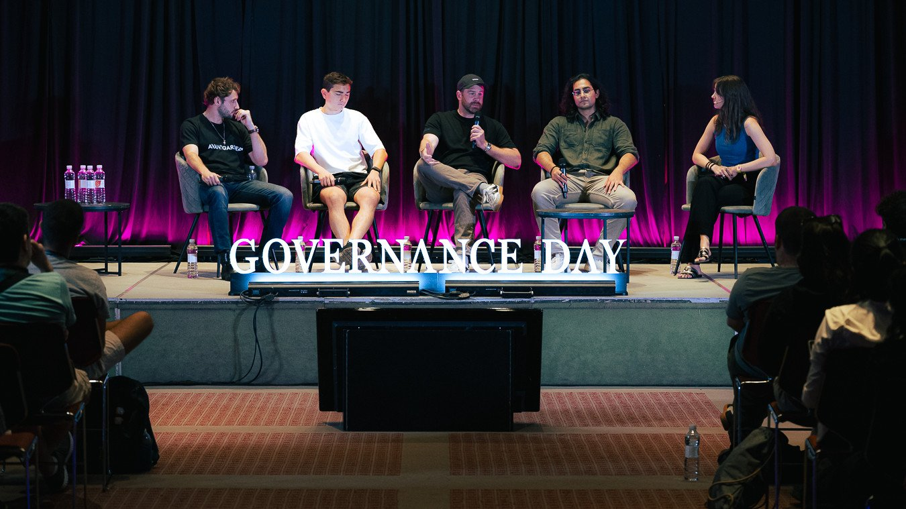
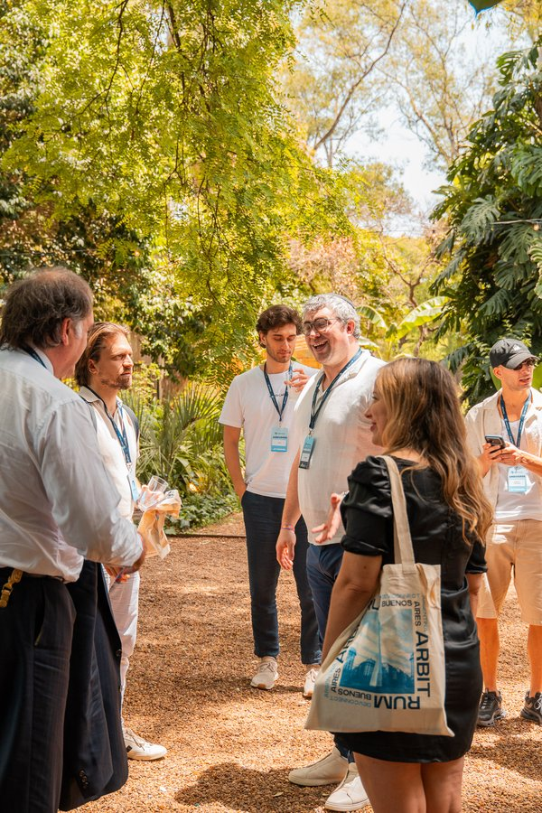
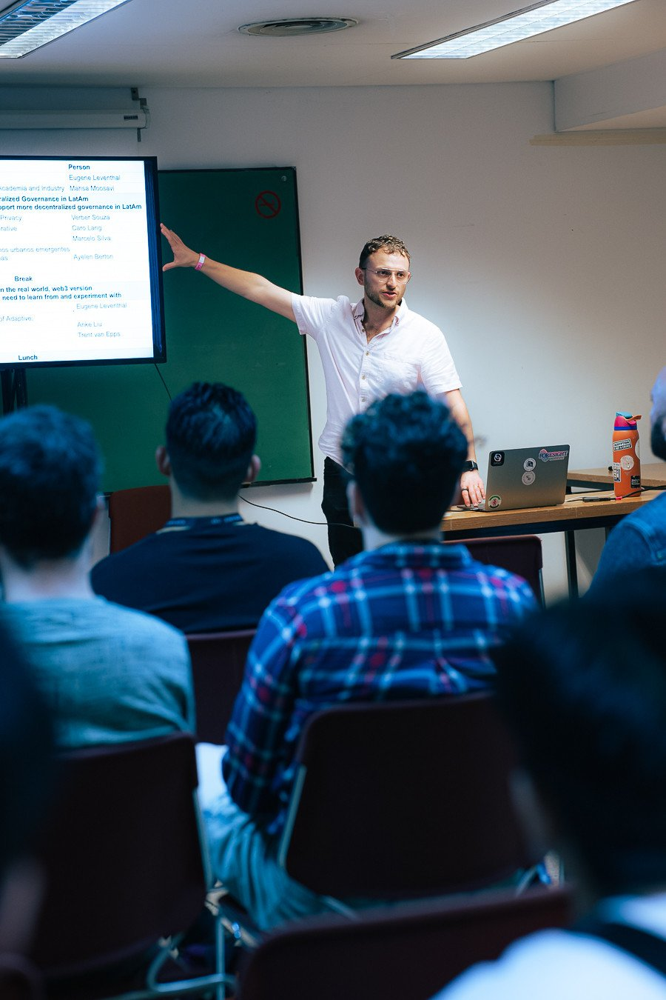
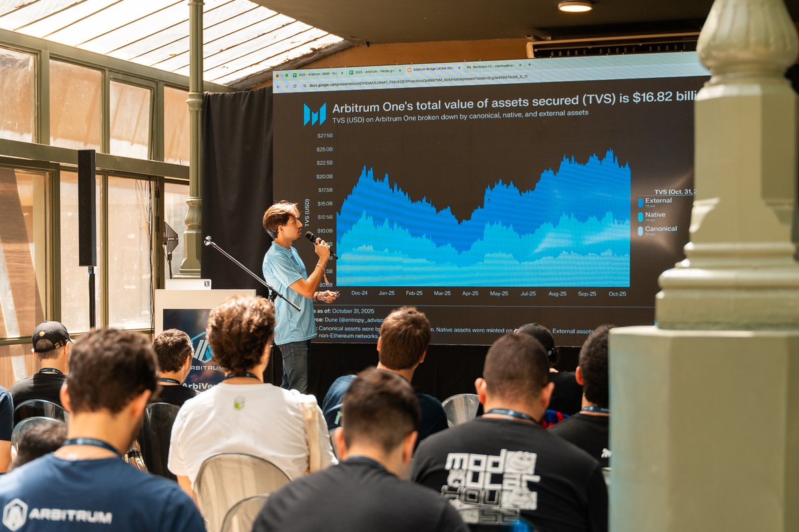

Photo Gallery

.jpeg)






Ran SEED Gov's events around Devconnect 2025, as well as curated private dinners, bringing leading crypto projects, researchers, institutions, and builders into the same room. Work included programming, speaker coordination, partnerships, and event execution.
Photo Gallery




Related social media posts
The leading Web3 governance event arrives in Buenos Aires 🇦🇷
— SEED Gov (@SEEDGov) October 29, 2025
Two days of talks, panels, and workshops with the brightest minds in the DAO space.
🎟️ Be part of the story and get your ticket now 👇 pic.twitter.com/SICMaxtI6n
20 minutes to go. Months of work led to this moment 💙🧡@SEEDGov @arbitrum pic.twitter.com/1znyFdhDdG
— Caro (@web3Caro) November 19, 2025
Latam is choosing its rails for the next decade, and the next million users will come from upgrading the platforms people already rely on.
— SEED Gov (@SEEDGov) December 3, 2025
Arbitrum Bridge LATAM was focused on one thing: getting @arbitrum in front of the players who already reach millions across the region,… pic.twitter.com/T3npExpu7k
This was Governance Day Devconnect BA 2025 ⚖️🇦🇷
— SEED Gov (@SEEDGov) December 8, 2025
On November 15 and 16, during @EFDevcon, we brought together builders and professionals for two days of debates, learning, and connections that continue to drive the future of coordination in Web3.
Thank you all for making this a… pic.twitter.com/e7BrCrlpeK